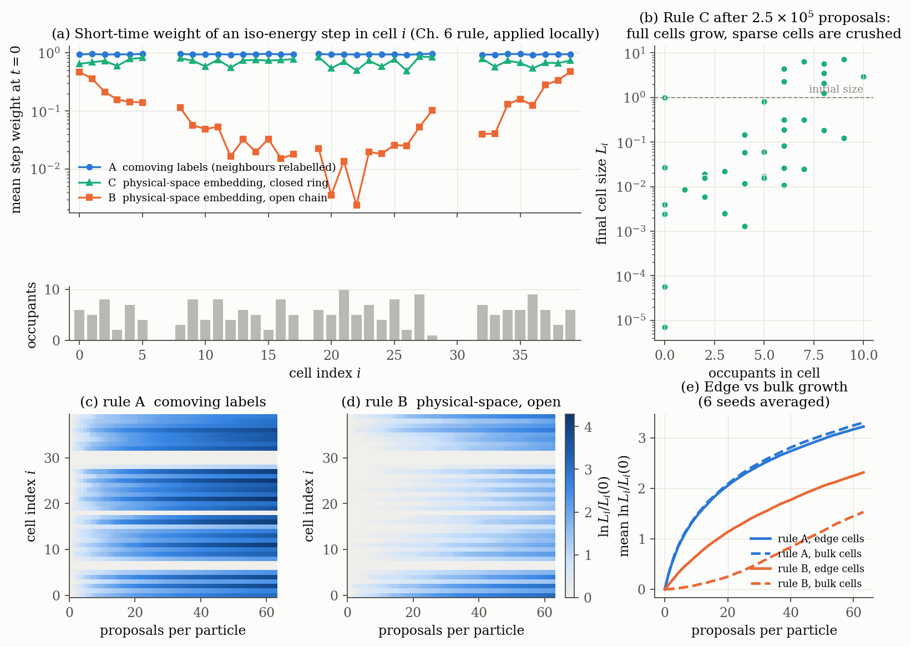
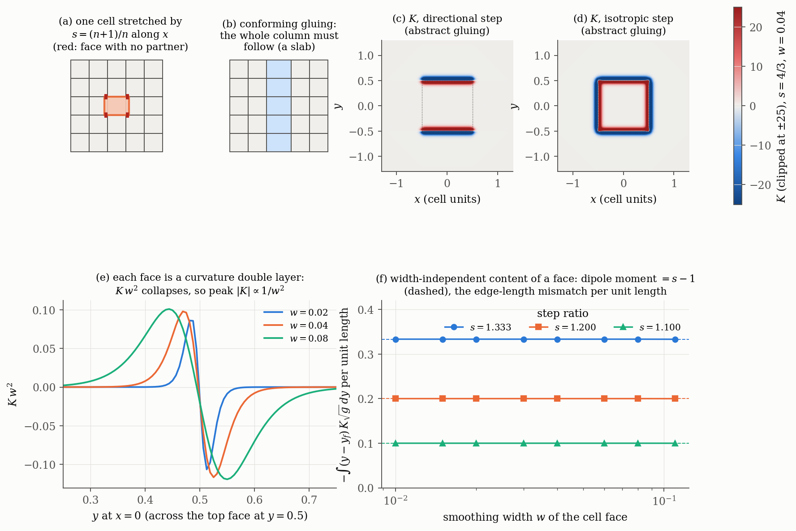
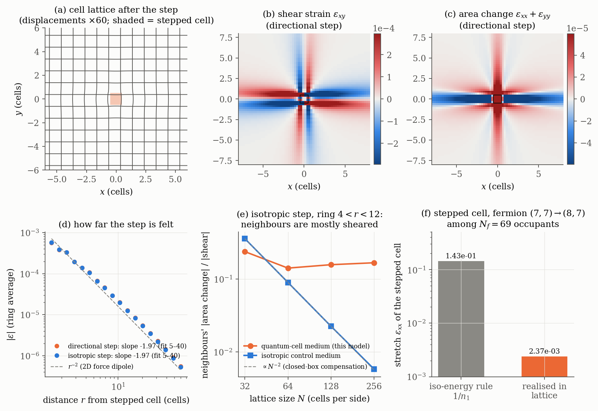
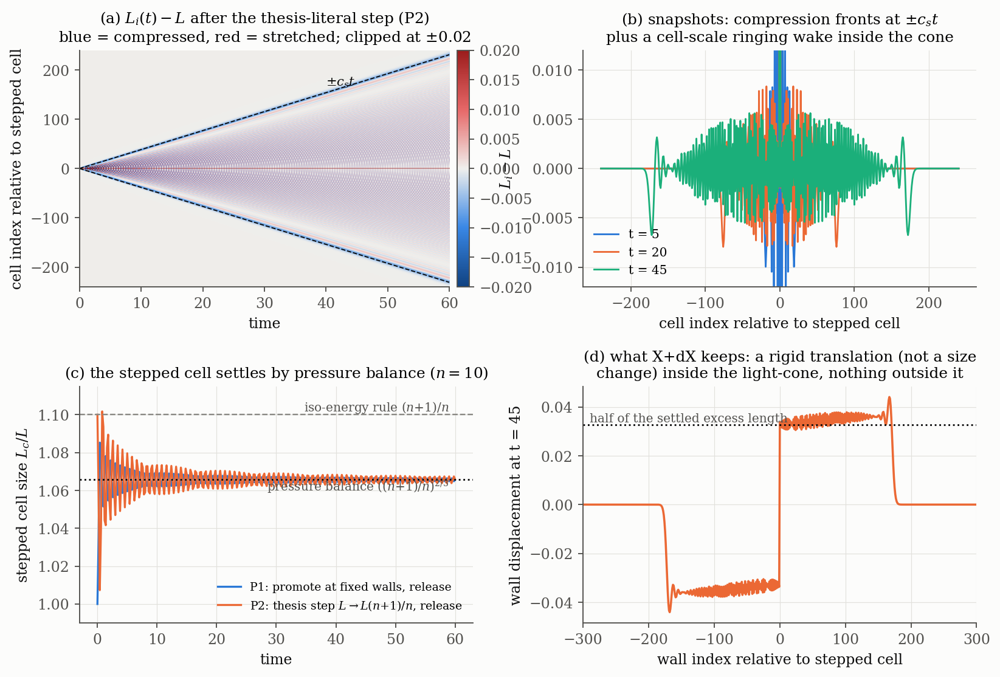
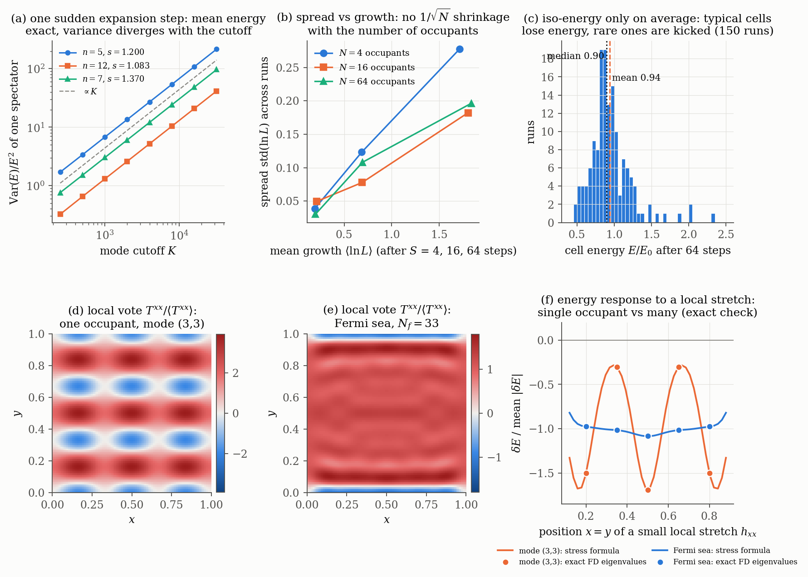

<title>Localizing the Iso-Energy Step</title>
<link rel="preconnect" href="https://fonts.googleapis.com">
<link rel="preconnect" href="https://fonts.gstatic.com" crossorigin>
<link rel="stylesheet" href="https://fonts.googleapis.com/css2?family=Source+Serif+4:ital,opsz,wght@0,8..60,400;0,8..60,600;1,8..60,400&family=IBM+Plex+Sans+Condensed:wght@500;600&family=IBM+Plex+Mono:wght@400;500&display=swap">
<script>
window.MathJax = {
  tex: { inlineMath: [["\\(", "\\)"]], displayMath: [["\\[", "\\]"]] },
  svg: { fontCache: "global" },
  options: { enableMenu: false }
};
</script>
<script src="https://cdnjs.cloudflare.com/ajax/libs/mathjax/3.2.2/es5/tex-svg.js"></script>
<style>
:root {
  --bg: #f6f7f5;
  --paper: #fdfdfc;
  --ink: #17201c;
  --ink-2: #48534e;
  --muted: #76807b;
  --rule: #d9ddd9;
  --accent: #1f5fae;
  --accent-soft: #e3ecf8;
  --warm: #b8521f;
  --warm-soft: #f8e7dc;
  --ok: #1c7a55;
  --ok-soft: #dff1e8;
  --plate: #fcfcfb;
  --serif: "Source Serif 4", "Source Serif Pro", Georgia, "Times New Roman", serif;
  --label: "IBM Plex Sans Condensed", "Arial Narrow", "Helvetica Neue", Arial, sans-serif;
  --mono: "IBM Plex Mono", ui-monospace, "SFMono-Regular", Menlo, Consolas, monospace;
}
@media (prefers-color-scheme: dark) {
  :root:not([data-theme="light"]) {
    color-scheme: dark;
    --bg: #121615; --paper: #181d1b; --ink: #e6ebe8; --ink-2: #b7c0bb; --muted: #8b958f;
    --rule: #2e3633; --accent: #7fb0ec; --accent-soft: #1b2a3d; --warm: #eb9a6d; --warm-soft: #33241b;
    --ok: #6fcfa2; --ok-soft: #173026; --plate: #fcfcfb;
  }
}
:root[data-theme="dark"] {
  color-scheme: dark;
  --bg: #121615; --paper: #181d1b; --ink: #e6ebe8; --ink-2: #b7c0bb; --muted: #8b958f;
  --rule: #2e3633; --accent: #7fb0ec; --accent-soft: #1b2a3d; --warm: #eb9a6d; --warm-soft: #33241b;
  --ok: #6fcfa2; --ok-soft: #173026; --plate: #fcfcfb;
}
* { box-sizing: border-box; }
body {
  background: var(--bg); color: var(--ink); font-family: var(--serif);
  font-size: 17px; line-height: 1.62; margin: 0;
  padding-inline: 16px; padding-block: 40px 80px;
}
main { max-width: 760px; margin: 0 auto; display: flex; flex-direction: column; gap: 0; }
.wide { width: min(1120px, calc(100vw - 32px)); margin-left: 50%; transform: translateX(-50%); }
h1, h2, h3 { font-family: var(--label); font-weight: 600; text-wrap: balance; line-height: 1.2; color: var(--ink); }
h1 { font-size: clamp(30px, 5vw, 42px); margin: 6px 0 10px; letter-spacing: -0.005em; }
h2 { font-size: 26px; margin: 56px 0 8px; padding-top: 18px; border-top: 1px solid var(--rule); }
h3 { font-size: 19px; margin: 32px 0 6px; }
p { margin: 0 0 14px; }
.eyebrow { font-family: var(--label); text-transform: uppercase; letter-spacing: 0.08em; font-size: 13px; color: var(--muted); }
.deck { font-size: 19px; color: var(--ink-2); margin-bottom: 18px; }
.meta { font-family: var(--label); font-size: 14px; color: var(--muted); display: flex; flex-wrap: wrap; gap: 6px 18px; }
code, .mono { font-family: var(--mono); font-size: 0.86em; }
code { background: var(--accent-soft); padding: 1px 5px; border-radius: 3px; }
a { color: var(--accent); }
.answers { margin: 30px 0 8px; display: grid; gap: 14px; }
.answer { background: var(--paper); border: 1px solid var(--rule); border-radius: 6px; padding: 16px 20px; }
.answer h3 { margin: 0 0 6px; font-size: 17px; }
.answer h3 .q { color: var(--accent); margin-right: 6px; }
.answer p { margin: 0 0 8px; font-size: 16px; }
.answer p:last-child { margin-bottom: 0; }
.tag { font-family: var(--label); font-size: 12px; font-weight: 600; letter-spacing: 0.04em; text-transform: uppercase;
  padding: 1px 7px; border-radius: 3px; white-space: nowrap; vertical-align: 1px; }
.t-derived { background: var(--accent-soft); color: var(--accent); }
.t-computed { background: var(--ok-soft); color: var(--ok); }
.t-model { background: var(--warm-soft); color: var(--warm); }
.result { border-left: 3px solid var(--accent); background: var(--paper); padding: 12px 18px; margin: 16px 0 18px; border-radius: 0 5px 5px 0; }
.result p { margin: 0 0 8px; }
.result p:last-child { margin: 0; }
.result .rt { font-family: var(--label); font-weight: 600; font-size: 16px; margin-bottom: 4px; display: flex; flex-wrap: wrap; gap: 8px; align-items: baseline; }
.flag { border-left-color: var(--warm); }
.math { overflow-x: auto; overflow-y: hidden; margin: 6px 0 14px; }
figure { margin: 22px 0 26px; }
figure .plate { background: var(--plate); border: 1px solid var(--rule); border-radius: 6px; padding: 10px; overflow-x: auto; }
figure img { display: block; width: 100%; height: auto; min-width: 640px; }
figcaption { font-size: 15px; color: var(--ink-2); line-height: 1.55; margin: 10px auto 0; max-width: 760px; }
figcaption b { font-family: var(--label); font-weight: 600; color: var(--ink); }
.tablewrap { overflow-x: auto; margin: 14px 0 18px; }
table { border-collapse: collapse; width: 100%; font-size: 15px; line-height: 1.45; }
th, td { text-align: left; vertical-align: top; padding: 8px 10px; border-bottom: 1px solid var(--rule); }
th { font-family: var(--label); font-weight: 600; font-size: 14px; color: var(--ink-2); letter-spacing: 0.02em; }
td.num, .num { font-family: var(--mono); font-variant-numeric: tabular-nums; font-size: 14px; white-space: nowrap; }
ol.items, ul.items { padding-left: 22px; margin: 8px 0 16px; }
ol.items li, ul.items li { margin-bottom: 10px; }
.small { font-size: 15px; color: var(--ink-2); }
footer { margin-top: 56px; padding-top: 16px; border-top: 1px solid var(--rule); font-size: 14px; color: var(--muted); font-family: var(--label); }
@media (max-width: 560px) {
  body { font-size: 16px; }
  h2 { font-size: 22px; }
  .answer { padding: 14px 14px; }
}
</style>

<main>
<header>
  <div class="eyebrow">Expanding Quantum Box · v15 · working note</div>
  <h1>Localizing the Iso-Energy Step</h1>
  <p class="deck">How a metric change made by one transition becomes local, what it does to the neighbouring cells, and how many particles settle on one value of \(g(X)\). Derivations and simulations the thesis does not contain.</p>
  <div class="meta"><span>25 Sept 2026</span><span>Read: all 27 chapters and appendices A–D</span><span>Code: <span class="mono">v15/explorations/locality/</span></span></div>
</header>

<section class="answers" aria-label="Short answers">
  <div class="answer">
    <h3><span class="q">Q1</span>How does the metric change become local?</h3>
    <p>In the thesis it does not become local. It is made local by assumption. The dictionary theorem (Ch. 17) turns one box into one global number, \(g=L^2\). Chapter 18 then says "let the iso-energy machinery act cell by cell" without stating how cells are glued to each other. That gluing rule is exactly what decides your question, and the two natural choices give opposite answers.</p>
    <p>With abstract cells (edge lengths fundamental), a one-cell step is perfectly local. In two or more dimensions it creates a curvature double layer on the faces parallel to the stretch, whose strength is fixed by the length mismatch \(s-1\). With cells embedded in a flat container, which is the Ch. 18.2 construction, a one-cell step is kinematically impossible. Either a whole slab steps, or the neighbours deform. In that case the geometry stays flat everywhere.</p>
  </div>
  <div class="answer">
    <h3><span class="q">Q2</span>What happens at \(X+dX\)?</h3>
    <p>For embedded cells, the neighbours are pushed aside elastically. Their strain falls as \(r^{-d}\), and it is mostly shear. The pattern is channelled along the lattice axes because the cell medium is about 60 times softer in shear than in stretch. That is the Splitting Theorem showing up as elasticity. The stepped cell keeps only about \(\tfrac23 E_\text{active}/E_\text{cell}\) of the stretch the iso-energy rule asks for: 1.7% in the example.</p>
    <p>Dynamically, the step launches a pressure pulse at the matter sound speed \(c_s=\sqrt{3m/M_w}\,v_\text{particle}\), not at light speed. After it passes, cells at \(X+dX\) are translated, not resized. With shared walls the literal thesis step is not iso-energetic: the squeezed neighbours pay about \(2E_\text{cell}/n\).</p>
  </div>
  <div class="answer">
    <h3><span class="q">Q3</span>How is a consensus on \(g(X)\) reached?</h3>
    <p>Inside a cell there is no averaging. Every step is one particle's discrete kick of \(\ln\frac{n+1}{n}\). More particles make the cell grow faster, not more precisely, and energy is conserved only on average, with a variance that diverges with the mode cutoff.</p>
    <p>Across space, the object that pools all particles' preferences is the stress tensor: \(\delta E=-\tfrac12\int\sqrt g\,T^{ab}\,\delta g_{ab}\). Many particles make \(T^{ab}\) smooth. What would turn this pooled preference into a local rule for \(g(X)\) is a local Hamiltonian constraint. The thesis imports that constraint (Ch. 21) rather than deriving it, so the consensus mechanism is the open item Ch. 27 lists first.</p>
  </div>
</section>

<h2>1. What the thesis actually says about neighbours</h2>
<p>I read every chapter looking for any statement about how a transition in one cell affects another. The single-box theory (Part I) has no notion of neighbours at all. Part III introduces a lattice of cells in §18.1, and from then on each chapter couples cells in its own way, never derived and never the same twice:</p>
<div class="tablewrap">
<table>
  <thead><tr><th>Chapter</th><th>How neighbouring cells are coupled</th><th>Status in the text</th></tr></thead>
  <tbody>
    <tr><td>17 Dictionary</td><td>One box = one metric component. No spatial variation exists.</td><td>Theorem (global only)</td></tr>
    <tr><td>18 Triad</td><td>"Let the iso-energy machinery of Part I act cell by cell." Edges live in an ambient Euclidean container (§18.2 honesty note). Gluing between cells is never specified.</td><td>Postulated implicitly</td></tr>
    <tr><td>18.4 Flatness</td><td>"Curvature … must come from the lattice", deferred to "when inter-cell coupling arrives (Ch. 21–22)".</td><td>Promissory</td></tr>
    <tr><td>21 Collapse chain</td><td>No coupling: each cell is its own FRW patch (separate universes).</td><td>Stated as approximation</td></tr>
    <tr><td>22 Casimir chain</td><td>Shared walls, fixed total length, gradient-descent relaxation.</td><td>Model choice, unlabelled</td></tr>
    <tr><td>22 Dispersion</td><td>One field across semi-transparent walls; wall displacement is the geometry.</td><td>Model choice, unlabelled</td></tr>
    <tr><td>24 Newton</td><td>A lattice Laplacian coupling \(\kappa\hat\nabla^2\delta\alpha\) is written down.</td><td>"Given Ch. 21–22"</td></tr>
    <tr><td>25 Graviton</td><td>A smooth continuum metric is imposed on a lattice field theory.</td><td>Static background</td></tr>
    <tr><td>27 Open problems</td><td>Item 1 (microscopic constraint) and item 7 ("inter-cell coupling") name the gap.</td><td>Open</td></tr>
  </tbody>
</table>
</div>
<p>So your reading is correct: the locality of the metric change, its effect on the neighbours and the consensus question are not addressed. The rest of this note does the derivations with the thesis's own ingredients (box spectrum, overlaps, Ch. 6 transition weights) and says which extra assumptions each step needs. Tags: <span class="tag t-derived">Derived here</span> for analytic results, <span class="tag t-computed">Computed here</span> for numerics I ran, <span class="tag t-model">Model choice</span> for assumptions the thesis does not fix.</p>

<h2>2. Q1 — where locality comes from</h2>

<h3>2.1 One dimension: shared walls and the identification map</h3>
<p>In 1D, neighbouring cells share walls. A step in cell \(X\) must move at least one wall, so every cell between \(X\) and a free end is displaced. Whether that costs anything depends on the identification map, which the thesis rightly calls "part of the physics" (§3.7, §19.4) but never applies to more than one cell.</p>
<ul class="items">
  <li><b>Comoving labels</b> (cells identified by their index). A translated cell is unchanged. The metric change sits in cell \(X\) alone, and in 1D its location is pure gauge.</li>
  <li><b>Physical-space sudden embedding</b>, the map the arrow of Ch. 6 is built on. A cell translated by \(\delta\) has its wavefunction cut on one side and gains an empty sliver on the other.</li>
</ul>
<div class="result">
  <div class="rt">Translation norm equals contraction norm <span class="tag t-derived">Derived here</span></div>
  <p>For an occupant in mode \(n\) of a cell of size \(L\), translated suddenly by \(\delta\) (with \(x=\delta/L\)):</p>
  <div class="math">\[ \mathcal N_\text{trans}(n,x)=\int_\delta^L \tfrac2L\sin^2\!\tfrac{n\pi y}{L}\,dy = 1-x+\frac{\sin 2\pi n x}{2\pi n}, \]</div>
  <p>which is identical to the Contraction Norm Theorem (6.3). With the Ch. 6 short-time rule, a step in cell \(X\) that pushes the cells on one side therefore has weight</p>
  <div class="math">\[ P_\text{step}(X)\;\propto\;\frac{n}{n+1}\prod_{\beta\in\text{pushed side}}\mathcal N_\text{trans}\!\Big(n_\beta,\tfrac{\delta}{L_\beta}\Big)\;\approx\;\frac{n}{n+1}\,\exp\!\Big(-\sum_{\beta}\tfrac{\delta}{L_\beta}\Big). \]</div>
  <p>The weight depends on every particle between \(X\) and the edge of the universe, so the transition amplitude is non-local. Checked against quadrature to 8 digits <span class="tag t-computed">Computed here</span>.</p>
</div>
<p>If the chain is closed (fixed total length), the pushed wall must contract a neighbour. The expansion of \(X\) is then paid for with the neighbour's contraction deficit, which the arrow of Ch. 6 suppresses exponentially in the neighbour's occupancy.</p>

<figure class="wide">
  <div class="plate"></div>
  <figcaption><b>Figure 1 — The same local step under three gluing rules.</b> A chain of 40 cells with 0–10 occupants each (modes 8–30). (a) At \(t=0\), comoving labels (A) give every occupied cell the weight \(n/(n+1)\approx 0.95\). Physical-space embedding on an open chain (B) gives about 0.4 at the edges and down to \(2.4\times10^{-3}\) in the bulk. That is consistent with \(\exp(-N_\text{side}\langle1/n\rangle)\approx 4\times10^{-3}\) for a mid-chain cell with about 92 particles on each side. The closed ring (C) sits at 0.5–0.9, set only by the adjacent cell. (b) Under rule C, after \(2.5\times10^5\) proposals the total length stays at 40 but cell sizes spread from \(7\times10^{-6}\) to 7.1. Log-size correlates with occupancy (\(r=0.70\)): full cells grow by crushing sparse ones. (c, d) Growth over the first 63 proposals per particle, shared colour scale. (e) Averaged over six seeds, after 10 proposals per particle the edges under rule B have grown by \(\langle\ln L\rangle=0.69\) against 0.095 in the bulk. Under rule A the two are equal (1.48 vs 1.51). The bulk catches up later because each step adds half a wavelength (\(\delta=L/n\) with \(n\propto L\)), so \(\delta/L\) and the toll fall as cells grow. The non-locality is strong while \(N_\text{side}\gtrsim n\).</figcaption>
</figure>

<h3>2.2 Two or more dimensions: compatibility decides everything</h3>
<p>In \(d\ge2\) the gluing condition has real content. Suppose cells are rectangles with conforming shared faces. The face between cell \((i,j)\) and \((i,j{+}1)\) has length \(L_x\), which both cells must agree on. Stretching one cell along \(x\) breaks that agreement on its two \(y\)-faces (Fig. 2a).</p>
<div class="result">
  <div class="rt">Slab theorem <span class="tag t-derived">Derived here</span></div>
  <p>For conforming rectangular cells, a pure directional dilation \(L_a\to sL_a\) is compatible only if every cell sharing an \(a\)-carrying face steps with it. The smallest compatible support is a whole slab (a column in 2D, a layer in 3D). Every such configuration is \(g=\mathrm{diag}(L_1(x^1)^2,L_2(x^2)^2,L_3(x^3)^2)\), which is flat.</p>
</div>
<p>This leaves two ways to make a truly local step.</p>
<p><b>(a) Abstract cells.</b> Edge lengths are fundamental and nothing is embedded, as in Regge calculus. The step is then a localized metric perturbation, and the mismatch becomes curvature. To linear order, with \(g=\delta+h\):</p>
<div class="math">\[ R^{(2)}=\partial_a\partial_b h_{ab}-\nabla^2 h \;\;\Rightarrow\;\; h_{11}=2\ln s\,\chi_\text{cell}:\quad R=-\partial_y^2 h_{11}\;\;(2D),\qquad R^{(3)}=-(\partial_2^2+\partial_3^2)\,h_{11}\;\;(3D). \]</div>
<p>The curvature lives only on the faces parallel to the stretch, and \(\int\!\sqrt g\,R=0\): it is a double layer. For the exact metric \(g=\mathrm{diag}(e^{2a},1)\), Gauss's formula gives \(K=-e^{-a}\partial_y^2 e^{a}\). Integrating by parts across a face at \(y_f\):</p>
<div class="math">\[ \int (y-y_f)\,K\sqrt g\;dy \;=\; -\big[e^{a}\big]_\text{inside}^\text{outside} \;=\; -(s-1), \]</div>
<p>independent of how sharp the face is. The step is a line of edge dislocations whose Burgers vector per unit face length is the length mismatch \(s-1\). That is the standard dislocation–curvature correspondence of continuum defect theory, arising here from one iso-energy transition.</p>
<p><b>(b) Embedded cells</b>, the Ch. 18.2 construction with edges \(\mathbf e_a\) in an ambient Euclidean container. If faces conform, the vertex positions define a map \(X(\xi)\) into flat space and \(g=\partial X\cdot\partial X\) is a pullback of the flat metric. Riemann is then identically zero, whatever the transitions do. A step can only be accommodated by the neighbours changing shape (section 3.1), and never produces curvature.</p>

<figure class="wide">
  <div class="plate"></div>
  <figcaption><b>Figure 2 — A one-cell step, glued abstractly, is a curvature double layer.</b> (a) One cell stretched by \(s=(n{+}1)/n\) leaves unmatched face length (red) on its \(y\)-faces. (b) Conforming gluing forces the whole column to follow. (c) Exact Gaussian curvature for the directional step (\(s=4/3\), face width \(w=0.04\)). Curvature is positive just inside the two \(y\)-faces, negative just outside, and zero on the \(x\)-faces. (d) The isotropic step rings all four faces. (e) \(K w^2\) across the top face for three widths: the profile keeps its shape, so peak \(|K|\propto1/w^2\) and a sharp face is a delta-function layer. (f) The dipole moment per unit length equals \(s-1\) to 6 digits for \(w=0.01\)–0.11 and three step ratios. Total curvature is zero to \(10^{-16}\) in every case <span class="tag t-computed">Computed here</span>.</figcaption>
</figure>

<div class="result flag">
  <div class="rt">A tension inside the thesis <span class="tag t-derived">Derived here</span></div>
  <p>Ch. 24 identifies \(\delta\alpha=-\Phi_\text{Newton}\) cell by cell, which gives the spatial metric \(e^{2\delta\alpha}\delta_{ij}\) with \(R^{(3)}\simeq-4\nabla^2\delta\alpha=16\pi G\rho\neq0\) wherever there is matter. Embedded, conforming cells cannot carry any curvature. So the Newtonian configuration of Ch. 24 is not reachable with the ambient-container construction of Ch. 18.2. The thesis needs abstract (Regge-type) gluing, and then the microscopic account of how a transition fixes curvature is the face-dislocation picture above, which the thesis does not have.</p>
</div>

<h2>3. Q2 — what happens at \(X+dX\)</h2>

<h3>3.1 Static response of embedded neighbours</h3>
<p>For embedded cells I built the elastic medium from the box spectrum itself, with no new stiffness parameter. A cell is the unit square mapped by a constant deformation gradient \(F\), so its metric is \(g=F^\mathsf TF\) and \(A=g^{-1}\). Its matter is a closed-shell Fermi sea of \(N_f=69\) fermions (all modes with \(m^2+n^2\le100\)). The cell energy</p>
<div class="math">\[ W(F)=\sum_{k\le N_f}\lambda_k\Big(-\tfrac12 A^{ab}\partial_a\partial_b\Big)\Big|_{\text{unit square, Dirichlet}},\qquad C_{ijkl}=\frac{\partial^2 W}{\partial F_{ij}\partial F_{kl}}\Big|_{F=\mathbb 1} \]</div>
<p>is computed exactly for parallelograms in a Galerkin sine basis. The \(\partial_x\partial_y\) matrix elements are \(\langle m|\partial|n\rangle=2mn(1-(-1)^{m+n})/(m^2-n^2)\). The step promotes one fermion \((7,7)\to(8,7)\), which changes the cell's first Piola stress by \(\Delta P_{11}=-\pi^2(2n_1+1)\). Neighbours respond through \(\partial_j(C_{ijkl}\partial_l u_k)=-\partial_j(\Delta P_{ij}\chi_\text{cell})\), which I solved exactly in Fourier space on periodic lattices of up to \(256^2\) cells.</p>
<div class="tablewrap">
<table>
  <thead><tr><th>Quantity (Galerkin \(K\) = 56 modes per axis)</th><th>Value</th><th>Note</th></tr></thead>
  <tbody>
    <tr><td>Cell energy \(W\)</td><td class="num">17 854.1</td><td>\(N_f=69\)</td></tr>
    <tr><td>Stretch stiffness \(C_{1111}=C_{2222}\)</td><td class="num">53 563.8</td><td>\(=3W\) exactly, since \(E\propto F_{11}^{-2}\)</td></tr>
    <tr><td>Cross stiffness \(C_{1122}\)</td><td class="num">0</td><td>no Poisson coupling in a box</td></tr>
    <tr><td>Shear stiffness \(C_{1212}\)</td><td class="num">866.6</td><td>919 / 882 / 871 / 867 at \(K\) = 24 / 34 / 44 / 56</td></tr>
    <tr><td>Acoustic tensor, smallest eigenvalue</td><td class="num">882 &gt; 0</td><td>stable in every direction</td></tr>
  </tbody>
</table>
</div>
<p>The shear stiffness is 1.6% of the stretch stiffness. That is the Splitting Theorem (Ch. 19) in elastic form: shear costs energy only at second order, so the quantum-cell medium is extremely soft in shear. One limitation showed up: the shell gap is one unit, so an area-preserving shear of 0.05 already crosses a level at the Fermi surface. Linear elasticity is safe only below strains of about 0.02, and every strain in this problem is below \(3\times10^{-3}\).</p>

<figure class="wide">
  <div class="plate"></div>
  <figcaption><b>Figure 3 — Embedded neighbours absorb a one-cell step as a shear field.</b> (a) The lattice after promoting one fermion in the shaded cell, displacements magnified 60×. (b) Shear strain \(\varepsilon_{xy}\): four-lobed with sign changes, concentrated in beams along the lattice axes. (c) Area change: cells in line with the stretch (along \(x\)) are compressed, cells above and below are stretched. At \(r=10\) the strain along an axis is 23 times the strain on the diagonal, because shear is so soft. (d) The ring-averaged strain falls as \(r^{-1.97}\) (fit over 5–40 cells; \(-2.04\) over 8–60), the 2D force-dipole law. (e) For an isotropic step, the neighbours' |area change| / |shear|. An isotropic control medium goes to zero as \(N^{-2}\), reproducing Eshelby's theorem that outside a dilating inclusion the neighbours change shape but not volume. The finite-\(N\) residue is the uniform compression of the rest of a closed box. The quantum-cell medium converges to about 0.15–0.17: mostly shear, but anisotropy leaves a real volume change. (f) The stepped cell stretches by \(2.4\times10^{-3}\), not the \(1/n_1=0.143\) the iso-energy rule asks for. That is 1.7%, matching the estimate \(\tfrac23E_\text{active}/W=0.018\) <span class="tag t-computed">Computed here</span>.</figcaption>
</figure>

<div class="result">
  <div class="rt">What the neighbours see <span class="tag t-derived">Derived here</span> <span class="tag t-computed">Computed here</span></div>
  <p>In an embedded lattice, a step at \(X\) is felt at \(X+dX\) as a displacement field with strain \(\sim|X-X'|^{-d}\). It is mainly a change of shape, and it is aligned with the lattice axes. The step itself is mostly undone: the stepped cell realizes only the fraction of the iso-energy stretch its active particle's energy share can win against the surrounding pressure,</p>
  <div class="math">\[ \frac{\varepsilon_\text{realised}}{1/n}\;\approx\;\frac23\,\frac{E_\text{active}}{E_\text{cell}}. \]</div>
  <p>A side benefit for Ch. 18: the shear the Conformal Obstruction Theorem says is missing is forced on the neighbours by compatibility. It does not need to be added as an independent generator. It remains a deformation of the cells relative to a flat geometry, not curvature.</p>
</div>

<h3>3.2 Dynamics: the step launches a pulse</h3>
<p>For the time dependence I took the 1D chain with shared walls and gave each wall a mass \(M_w\). The thesis has no local geometry inertia; the closest object is the curvature of the ladder band, \(M_w\sim 1/(2J\delta^2)\), which I use only as motivation <span class="tag t-model">Model choice</span>. Occupants follow the walls adiabatically, so cell \(i\) exerts the pressure \(p_i=\pi^2n_i^2/mL_i^3\), and</p>
<div class="math">\[ M_w\ddot x_j=p_j-p_{j+1}\;\;\xrightarrow{\text{linearise}}\;\; M_w\ddot u_j=\kappa\,(u_{j+1}-2u_j+u_{j-1}),\qquad \kappa=\frac{3\pi^2n^2}{mL^4},\qquad c_s=\sqrt{\frac{3m}{M_w}}\;v_\text{particle}. \]</div>
<p>The spring constant \(\kappa\) is exactly the matter stiffness \(+3\pi^2n^2\) per bond of Ch. 22 (22.4). The pressure-balanced size of a cell whose occupant went from \(n\) to \(n+1\) is</p>
<div class="math">\[ p(L_c;n{+}1)=p(L;n)\;\Rightarrow\; L_c=L\Big(\frac{n+1}{n}\Big)^{2/3}\qquad\text{instead of the iso-energy } L\,\frac{n+1}{n}. \]</div>
<p>I ran two versions of the step in the middle of a 601-cell chain (\(n=10\), \(M_w=200m\)):</p>
<ul class="items">
  <li><b>P1:</b> promote the occupant at fixed walls, then release.</li>
  <li><b>P2:</b> the thesis step, \(L\to L(n{+}1)/n\) at once, which squeezes the two neighbours.</li>
</ul>

<figure class="wide">
  <div class="plate"></div>
  <figcaption><b>Figure 4 — A local step radiates a pressure pulse at the matter sound speed.</b> (a) \(L_i(t)-L\) after the thesis step (P2). Disturbances stay inside \(\pm c_st\) with \(c_s=3.848\) cells per unit time predicted; the fitted front moves at 3.92, slightly faster because the detection threshold picks up the dispersive precursor. (b) At \(t=45\) the compression fronts sit at \(\pm175\approx c_s t\). Inside the cone the cells ring with cell-scale oscillations of comparable amplitude: a one-cell kick excites short lattice waves that travel slowly. (c) Both protocols settle at \(L_c/L=1.0656\), the pressure-balance value \((11/10)^{2/3}=1.06560\), not the iso-energy value 1.100. (d) Walls inside the cone end up displaced by \(\pm0.033\), half the settled excess. Walls outside have not moved. Total energy drifts by less than \(3\times10^{-4}\) units out of about \(3\times10^{5}\), and wall speeds stay below \(10^{-3}v_\text{particle}\), so the adiabatic assumption holds <span class="tag t-computed">Computed here</span>.</figcaption>
</figure>

<div class="result flag">
  <div class="rt">The literal step breaks Postulate K1 once walls are shared <span class="tag t-computed">Computed here</span></div>
  <p>P2 keeps the stepped cell's energy fixed, but squeezing its two neighbours by \(\delta/2\) each adds 106.6 energy units, 21.6% of one cell's energy (the first-order estimate is \(2E_\text{cell}/n=98.7\)). P1, promotion at fixed walls, costs 103.6. In a lattice with shared walls, no protocol is both iso-energetic and force-balanced. Also note that this longitudinal (conformal) disturbance propagates at matter sound speed. In GR that sector does not propagate at all: it is fixed instantaneously by the constraint, which is how Ch. 24's elliptic Poisson equation treats it. The two pictures agree only if a local constraint is imposed.</p>
</div>

<h2>4. Q3 — how a consensus is reached</h2>

<h3>4.1 Inside one cell: no averaging, one kick at a time</h3>
<p>With \(N\) occupants, the Ch. 6 rules make each occupant "active" at rate \(\Gamma\,n_\alpha/(n_\alpha+1)\), since expansion is free for spectators (Thm 6.1). A step by occupant \(\alpha\) changes \(\ln L\) by \(\ln\frac{n_\alpha+1}{n_\alpha}\approx 1/n_\alpha\), which is half that occupant's de Broglie wavelength. So \(\ln L\) is a sum of discrete kicks, each decided by one particle, not an average over particles.</p>
<ul class="items">
  <li><b>Growth law.</b> Physical wavenumbers are preserved on average in the embedding picture, so \(\dot L=\Gamma\sum_\alpha\lambda_\alpha/2\): linear, Milne-like growth, the same class as Ch. 20 case (a). A long run gives slope 0.452 against the predicted 0.465.</li>
  <li><b>No self-averaging.</b> At a fixed number of steps \(S\) the spread of \(\ln L\) is the same for \(N=4,16,64\). At \(S=64\) it is 0.28, 0.18 and 0.20, where \(1/\sqrt N\) scaling would give 0.07 at \(N=64\). The time needed scales as \(1/N\).</li>
  <li><b>Energy only on average.</b> The sudden-embedding overlaps (3.8) fall as \(|c_k|^2\sim k^{-4}\), and \(E_k^2\sim k^4\), so</li>
</ul>
<div class="math">\[ \sum_k|c_k|^2E_k=E_n\;\;\text{(Thm 6.2)},\qquad \sum_k|c_k|^2E_k^2\;\propto\;K_\text{cutoff}\;\to\;\infty. \]</div>
<p>After one step a spectator is no longer in a definite mode, so the thesis's "active particle in mode \(n\)" is undefined for the next step. To iterate the ladder at all I had to project spectators onto modes with probabilities \(|c_k|^2\) <span class="tag t-model">Model choice</span>. The thesis needs some rule of that kind (decoherence, measurement, or an adiabatic alternative) and does not state one.</p>

<figure class="wide">
  <div class="plate"></div>
  <figcaption><b>Figure 5 — Consensus inside a cell and across space.</b> (a) One sudden expansion step: the spectator's mean energy is conserved (0.99999 at \(K=32\,000\)) while its variance grows linearly with the cutoff, for three \((n,s)\). (b) Spread of \(\ln L\) against mean growth after \(S=4,16,64\) steps: sixteen times more occupants gives no \(1/\sqrt N\) shrinkage. (c) Cell energy after 64 steps, 150 runs: median 0.90, mean 0.94, maximum 2.32 (up to 6.0 in shorter runs). Typical cells lose energy and a few get large kicks. (d) Local stress \(T^{xx}\) for one occupant in mode (3,3): bands of both signs. A stretch placed on a negative band raises the energy. (e) The same for a 33-fermion sea: nearly uniform, with boundary layers. (f) Energy change from a small Gaussian stretch \(h_{xx}\) placed along \(x=y\). Lines: the stress formula. Dots: exact finite-difference eigenvalues of the deformed Laplace–Beltrami operator. They agree to about 1% for mode (3,3) and 0.3% for the sea. The single occupant's response varies 5.5× with position; the sea's by about 11% <span class="tag t-computed">Computed here</span>.</figcaption>
</figure>

<h3>4.2 Across space: the stress tensor pools the preferences</h3>
<div class="result">
  <div class="rt">The consensus field is \(T^{ab}\) <span class="tag t-derived">Derived here</span></div>
  <p>For occupants in states \(\psi_\alpha\) on a cell with metric \(g=\delta+h\), first-order perturbation of \(E[\psi]=\tfrac12\int\sqrt g\,g^{ab}\partial_a\psi\,\partial_b\psi\) at fixed \(\int\sqrt g|\psi|^2=1\) gives</p>
  <div class="math">\[ \delta E=-\frac12\int\sqrt g\;T^{ab}h_{ab},\qquad T_{ab}=\sum_\alpha\Big[\partial_a\psi_\alpha\partial_b\psi_\alpha+\delta_{ab}\big(E_\alpha|\psi_\alpha|^2-\tfrac12|\nabla\psi_\alpha|^2\big)\Big]. \]</div>
  <p>Each particle votes on a local metric change in proportion to its own local stress. Many particles make the field smooth: Fig. 5e against 5d. In 1D, for any eigenstate \(T=\tfrac12\psi'^2+E\psi^2=2E/L\) is uniform, so where the stretch happens inside a box is unobservable. Location only acquires meaning in \(d\ge2\), or relative to walls and other matter. The formula holds for non-degenerate levels and closed shells. For a degenerate pair such as (3,2)/(2,3) on the square it fails, and the pair's sum must be used instead (I checked this).</p>
</div>
<p>This is where the consensus question really lands. Postulate K1 (iso-energy) applied to a deformation \(h_{ab}(x)\) is one scalar condition, \(\int T^{ab}h_{ab}=0\), for the whole system. It does not fix \(g\) point by point. Wherever \(T>0\), a purely local stretch lowers the energy, so a genuinely local step can be iso-energetic only with a quantum jump plus a compensating change elsewhere. A pointwise rule, "the geometry at \(X\) is set by the matter at \(X\)", needs a local energy balance. That is the Hamiltonian constraint \(\mathcal H_\text{grav}(X)+\mathcal H_\text{matter}(X)=0\), which Ch. 21 imports as a postulate and Ch. 27 item 1 lists as the most important open calculation.</p>

<h2>5. What this means for the thesis</h2>
<ol class="items">
  <li><b>Declare the gluing.</b> State whether cells are embedded (Ch. 18.2's ambient container) or abstract. Embedded conforming cells can never be curved, which conflicts with Ch. 24. Abstract cells turn each local transition into a face dislocation with Burgers vector \(s-1\), which is a natural microscopic source of curvature the thesis could use.</li>
  <li><b>The identification map must be chosen for the whole lattice, not per cell.</b> The physical-space map that powers the arrow of Ch. 6 makes a step's amplitude depend on every particle between the cell and the edge (Fig. 1). The comoving map keeps steps local but, by Ch. 19.4, removes the overlap tolls the arrow needs.</li>
  <li><b>K1 and shared walls are incompatible.</b> The step either costs the neighbours about \(2E/n\) or leaves the cell out of force balance. After relaxation the stepped cell sits at \(((n{+}1)/n)^{2/3}\), not \((n{+}1)/n\).</li>
  <li><b>Local geometry needs a kinetic term.</b> Without wall inertia there is no dynamics for \(X+dX\). With it, the conformal sector propagates at matter sound speed, not light speed. Only a local constraint recovers GR's non-propagating conformal mode and the instantaneous Poisson equation used in Ch. 24.</li>
  <li><b>The ladder needs a spectator rule.</b> After one sudden step the spectators are in superpositions with infinite energy variance. Iterating the Part I dynamics requires an explicit projection or decoherence rule.</li>
  <li><b>Useful by-product for Ch. 18–19.</b> In an embedded lattice, a one-cell dilation forces shear on the neighbours, and the shear-soft medium (\(C_{1212}/C_{1111}=0.016\)) is the Splitting Theorem expressed as elasticity. Both are cheap to add and support the thesis's own structure.</li>
</ol>

<h2>6. Assumptions and reproducibility</h2>
<div class="tablewrap">
<table>
  <thead><tr><th>Choice I made</th><th>Where</th><th>Why it matters</th></tr></thead>
  <tbody>
    <tr><td>Short-time Ch. 6 weights used as step rates; stochastic unravelling</td><td>Sim 1, 5</td><td>Same regime as Thm 6.5; the long-time golden-rule regime is not covered.</td></tr>
    <tr><td>Spectators projected onto modes after each step (dominant wavelength in Sim 1, sampled from \(|c_k|^2\) in Sim 5)</td><td>Sim 1, 5</td><td>The thesis gives no rule; results about growth and spread depend on it.</td></tr>
    <tr><td>Parallelogram cells (constant \(F\) per cell), closed-shell Fermi sea, linear elasticity</td><td>Sim 3</td><td>Valid for strains below about 0.02; all strains here are below \(3\times10^{-3}\). 2D only; the 3D decay law \(r^{-3}\) is stated, not simulated.</td></tr>
    <tr><td>Classical walls with mass \(M_w\), adiabatic occupants, one occupant per cell</td><td>Sim 4</td><td>\(M_w\) sets \(c_s\) and is not fixed by the thesis. Adiabaticity was checked (wall speed below \(10^{-3}v\)).</td></tr>
    <tr><td>Vacuum (Casimir) stiffness neglected</td><td>Sim 3, 4</td><td>Ch. 22 finds it about 100 times smaller than matter stiffness and of opposite sign.</td></tr>
    <tr><td>Non-interacting occupants</td><td>all</td><td>As in the thesis. Interactions would add another channel for consensus.</td></tr>
  </tbody>
</table>
</div>
<p class="small">Scripts, in <span class="mono">v15/explorations/locality/</span>, standalone numpy/scipy/matplotlib: <span class="mono">sim1_chain_maps.py</span>, <span class="mono">sim1_analyse.py</span>, <span class="mono">fig1.py</span> (gluing rules); <span class="mono">sim2_curvature.py</span>, <span class="mono">fig2.py</span> (curvature double layer); <span class="mono">cellmedium.py</span>, <span class="mono">sim3_check.py</span>, <span class="mono">sim3_eshelby.py</span>, <span class="mono">fig3.py</span> (quantum-cell elasticity); <span class="mono">sim4_pulse.py</span>, <span class="mono">fig4.py</span> (wall dynamics); <span class="mono">sim5_consensus.py</span>, <span class="mono">sim5b.py</span>, <span class="mono">sim6_stress.py</span>, <span class="mono">fig5.py</span> (consensus). Every number quoted above is printed by one of them.</p>

<footer>Working note on the v15 thesis draft. Nothing here has been added to the thesis text.</footer>
</main>
